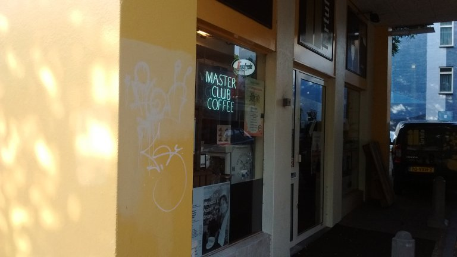
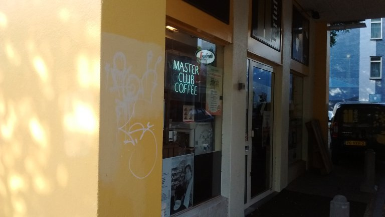
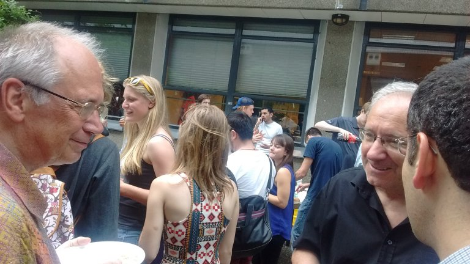

پیادهروی در دلفت-سه جولای دوهزار و پانزده

قهوهخانهای نزدیک خانهمان. داخلش خیلی شلوغ است و احساس میکنم قهوهاش باید گران باشد. یکی روی دیوار زرد بدرنگش گرافیتی زشتتری کشیده و صاحب مغازه سعی کرده پاکش کند.

قهوهخانهای نزدیک خانهمان. داخلش خیلی شلوغ است و احساس میکنم قهوهاش باید گران باشد. یکی روی دیوار زرد بدرنگش گرافیتی زشتتری کشیده و صاحب مغازه سعی کرده پاکش کند.

سوپروایزرم هانس (چپ) و آرنه اسکاوگه (راست)، دانشمندان باسواد و بیادعا، با مغزهایی پر و شکمهایی گرد و قلمبه از شدت فعالیت ذهنی و کمبود کار بدنی. کمی از کله روحی هم در عکس هست. وزنش را اگر کم نکرده بود احتمالن چند سال بعد شبیه یکی از همین دو تا میشد.
تابلوهای مکدونالد و کَیکشاپ، دو آشغال فروشی که از قضا کنار هم هستند. مکدونالد: تولیدکننده ساندویچهای ناسالم، به ظاهر ارزان، و ناکافی برای هر سایز معده. کافی است یک بار ساندویچش را بدون نوشابه بخورید تا متوجه شوید این غذا چه پوچ و بیارزش است. نوشابههای بزرگ و پر از شکر که بار تامین کالری را به دوش میکشند. حتی روی سالادش هم سس سرکه و شکر میریزد، برای مخفی کردن بیبخاری ساندویچهایش. نان ساندویچش حاوی مقدار زیادی هوا، اندکی کاغذ خمیر شده، و مقدار قابل توجهی نگهدارندههای شیمیایی است. همچنین سیبزمینی سرخ کردهاش. کیکشاپ فروشگاهی است که اجناس بیکیفیت برندهای معروف را با تخفیف ظاهراً زیاد میفروشد. تخفیفها به این شکل اعمال میشوند که فروشنده قیمت مورد نظرش را گوشه برچسب مینویسد. بعد عدد را در دو ضرب کرده و درشت مینویسد وسط کاغذ. آنگاه روی آن عدد درشت با ماژیک قرمز یک خط مورب میکشد.